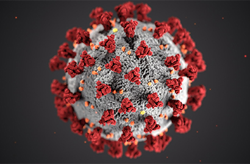

COVID-19
COVID-19 (od ang. Coronavirus Disease 2019) – ostra choroba zakaźna układu oddechowego wywołana zakażeniem wirusem SARS-CoV-2. Została po raz pierwszy rozpoznana i opisana w listopadzie 2019, w środkowych Chinach (miasto Wuhan, w prowincji Hubei) podczas serii zachorowań zapoczątkowującej pandemię tej choroby
Standardową metodą diagnozowania zakażenia jest test reakcji łańcuchowej polimerazy z odwróconą transkrypcją (RT-qPCR, real-time RT-PCR) wykonany z wymazu nosowo-gardłowego lub próbki plwociny, który dostarcza wyniki w czasie od kilku godzin do dwóch dni. Analiza przeciwciał z próbki surowicy krwi również może być wykorzystana jako metoda diagnostyczna, pozwalająca na otrzymanie wyniku w ciągu kilku dni. Choroba może także zostać zdiagnozowana na podstawie oceny kombinacji objawów, czynników ryzyka oraz wyniku badania tomografii komputerowej klatki piersiowej, wykazującego cechy zapalenia płuc.
Stanowisko WHO na podstawie danych z 3 marca 2020 mówi o śmiertelności (CFR – case fatality rate, czyli liczba zgonów na zarejestrowane przypadki zachorowania) na poziomie 3,4%. 30 stycznia 2020 roku WHO ogłosiło stan zagrożenia dla zdrowia publicznego o zasięgu międzynarodowym w wyniku rozprzestrzeniającej się epidemii COVID-19. 11 marca 2020 WHO uznała serię zachorowań na COVID-19 występującą od listopada 2019 za pandemię.